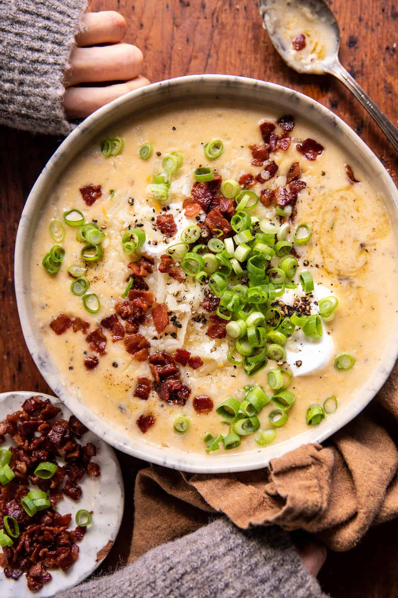

Baked Potato Soup

Ingredients
- Bacon:This baked potato soup starts with bacon cooked in a large skillet.
- Butter: You can also use margarine.
- Flour and milk:Whisk all-purpose flour and milk into the melted butter for a perfectly thick base.
- Baked potatoes:
- Green onions:Chopped green onions lend bright, bold flavor and color.
- Seasonings: This baked potato soup is simply seasoned with salt and pepper.
- Cheese and sour cream:Shredded Cheddar cheese and sour cream ensure a rich and creamy soup.
Steps
- Cook the bacon.
- Melt the butter, then whisk in the flour and milk.
- Add the potatoes and onions and bring to a boil.
- Reduce to a simmer, then stir in the remaining ingredients.
- Cook until the cheese is melted.
HOME